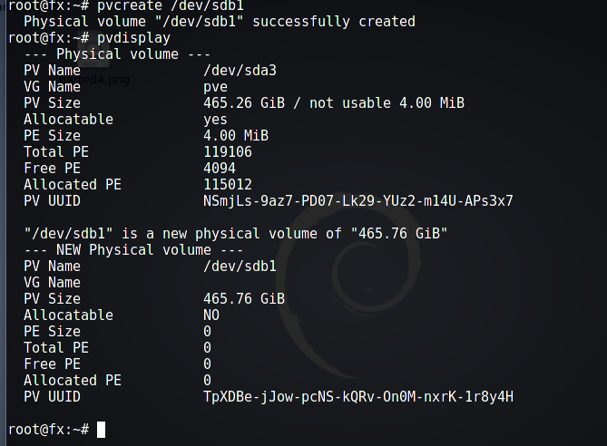
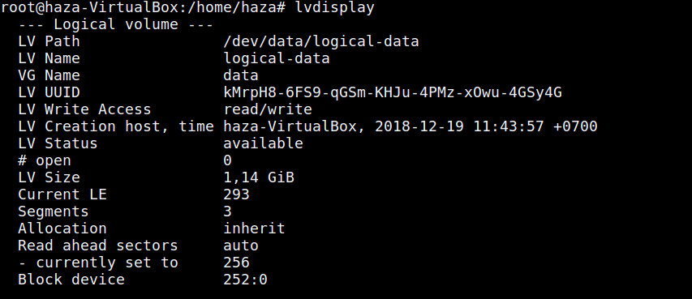
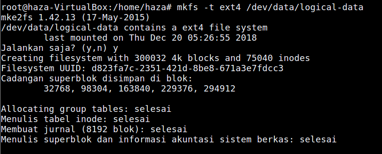
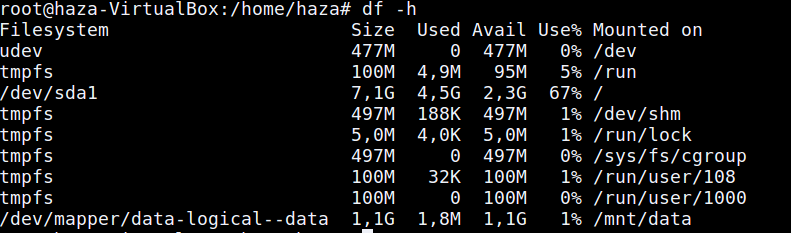

Pengertian LVM :
LVM adalah sebuah manajemen penyimpan di sistem operasi GNU/Linux yang menyediakan fleksibilitas dalam membuat dan mengubah partisi dalam sebuah disk. LVM menambahkan lapisan antara antarmuka I/O kernel dengan perangkat fisik untuk mendapatkan logical-view dari penyimpan. Dengan adanya lapisan inilah kita dapat melakukan perubahan partisi baik itu resize, penghapusan, dan lain - lain secara live pada sistem baik untuk satu atau lebih media.
Kemudahan tersebut akan membuat administrator maupun pengguna lebih nyaman dalam melakukan manajemen dan alokasi ruang penyimpan hingga penamaan volume. Selain itu kita dapat melakukan snapshot dan membuat block-device salinan sebuah partisi atau lebih untuk mencatat statusnya dengan tujuan backup
Beberapa istilah yang dikenal di dunia LVM yaitu :
adalah physical disk atau media penyimpan secara fisik baik itu berupa partisi secara konvensional misal: hda1, hda3, hdc5,sda3 maupun RAID..
adalah sebuah volume yang dibuat dari satu atau lebih PV dalam media penyimpan dan juga sebagai manajer bagi PV dan LV.
adalah partisi secara logical yang dibuat di atas VG dan pada LV inilah filesystem akan diletakkan.
adalah bagian-bagian atau potongan yang membentuk sebuah PV, dengan PE ini dapat ditentukan maksimal ukuransebuah VG.
adalah bagian atau potongan yang membentuk LV,ukurannya sama dengan PE.
Keuntungan menggunakan LVM :
adalah fleksibilitas manajemen dan alokasi partisi. Kekurangannya adalah kesulitan bagi pengguna dengan distro yang tidak menyertakan dukungan LVM secara default terutama saat instalasi dan mempunyai resiko bagi yang belum terbiasa menggunakannya.
Cara membuat LVM
Tapi sebelum anda melakukan configure ini lebih baik anda melakukannya di virtual box dengan mendownloadnya disini http://tanyaomjack.blogspot.com dikarenakan saya disini menggunakan virtual box
Buat Hardisk baru di virtual box :
buka menu setting yang berada pada bagian atas tool di virtual box,jika sudah lalu click storage dan buat pada bagian yang bertuliskan SATA dan click icon sebelah kanan yang jika disorot bertuliskan add Hardisk dan pastikan virtual box kita off dikarenakan jika masih running maka tidak akan bisa di click.
Mendownload LVM :
update group terlebih dahulu dengan perintah berikut :
$ sudo apt-get update
Install LVM :
$ sudo apt-get install lvm2
Membuat Partisi :
Kalian bisa melihatnya di web berikut : https://azzaid.com
Mengubah type Partisi menjadi LVM :
$ sudo fdisk /dev/sdb
lalu kalian bisa mengecek nomer berapa kah untuk membuat menjadi LVM dengan menggunakan "l" karena setiap OS berbeda nomernya.
28 Linux RAID A19D880F-05FC-4D3B-A006-743F0F84911E 29 Linux extended boot BC13C2FF-59E6-4262-A352-B275FD6F7172 30 Linux LVM E6D6D379-F507-44C2-A23C-238F2A3DF928 31 FreeBSD data 516E7CB4-6ECF-11D6-8FF8-00022D09712B 32 FreeBSD boot 83BD6B9D-7F41-11DC-BE0B-001560B84F0F 33 FreeBSD swap 516E7CB5-6ECF-11D6-8FF8-00022D09712B 34 FreeBSD UFS 516E7CB6-6ECF-11D6-8FF8-00022D09712B 35 FreeBSD ZFS 516E7CBA-6ECF-11D6-8FF8-00022D09712B 36 FreeBSD Vinum 516E7CB8-6ECF-11D6-8FF8-00022D09712B 37 Apple HFS/HFS+ 48465300-0000-11AA-AA11-00306543ECAC 38 Apple UFS 55465300-0000-11AA-AA11-00306543ECAC 39 Apple RAID 52414944-0000-11AA-AA11-00306543ECAC
Setelah itu maka kalian akan mengganti type partisi menjadi LVM dengan menggunakan "t" jika berhasil maka akan keluar tulisan seperti ini "Changed type of partition 'Linux filesystem' to 'Linux LVM'".
Command (m for help): t Partition number (1-3, default 3): (Nomer partisi yang ingin diubah menjadi LVM) Hex code (type L to list all codes): 30 (Code yang kalian cek seperti di atas.kalo saya memasukkan angka 30.) Changed type of partition 'Linux filesystem' to 'Linux LVM'.
Jangan lupa untuk menyimpannya dengan menggunakan "w".dikarenakan jika kalian tidak menyimpannya maka semua yang kalian kerjakan tadi akan hilang.dan jika kalian merasa bingung bisa mengetikkan huruf "m" untuk help.
Membuat Physical Volume :
$ sudo pvcreate /dev/sdb1
Untuk mengecheck apakah berhasil atau tidak bisa menggunakan perintah berikut :
$ sudo pvdisplay
Membuat Volume Group :
$ sudo vgcreate data(ini hanya penamaan saja,jadi kalian bebas ingin memberi nama apa saja /dev/sdb1 /dev/sdb2(data gabungan dari sdb1 dan sdb2)
Membuat Logical Volume :
$ sudo lvcreate --name logical-data --size 920 data
untuk penamaan terserah kalian ingin menamakan apa dan untuk size sesuaikan dengan ukuran partisi yang kalian gabungkan.tetapi untuk yang terakhir itu kalian harus menyamakan dengan nama Volume Group.
Untuk mengechecknya kalian bisa menggunakan command berikut :
$ sudo lvdisplay
Membuat filesystem di Logical Volume :
$ sudo mkfs -t ext4 /dev/data/logical-data
Karena jika kita tidak membuat,maka kita tidak akan bisa untuk menyimpan apapun didalamnya dan untuk ext4 merupakan filesystem default linux,untuk penamaan akhir kalian mengikuti Logical Volume
Membuat folder Mount dan Memount partisi :
$ sudo mkdir data
setelah itu saya akan memount partisi yang kita buat.dan untuk setelah /dev itu harus sesuai dengan Volume Group untuk setelah juga harus sesuai dengan Logical Volume.
$ sudo mount /dev/data/logical-data /mnt/data
Selanjutnya kita akan mengecek dengan command berikut dan jika berhasil maka akan sesuai dengan gambar dibawah :
$ sudo df -h
Membuat partisi ketiga dan mengubahnya ke LVM :
Membuatnya sama saja seperti diatas akan tetapi setelah kalian setelah kalian mengubah ke LVM dan membuatnya jangan lupa untuk direboot.dikarenakan jika kalian tidak merebootnya maka partisi ketiga tidak akan muncul.dan jangan lupa membuat Physical volume.
Menggabungkan partisi ketiga dengan partisi sebelumya :
kita tidak usah membuat Volume Group baru tetapi hanya perlu mengextendnya,ikuti perintah berikut :
$ sudo vgextend data /dev/sdb3
Menggabungkan Logical Volume ke partisi ketiga :
$ sudo lvextend -l +105 /dev/data/logical-data
diatas tadi saya mengextend Logical Volume dan untuk angka 105 saya mengambil dari Free PE / size kalian bisa mengechecknya dengan command berikut :
$ sudo vgdisplay
lalu ikuti command berikut :
$ sudo e2fsck -f /dev/data/logical-data
lalu ikuti command berikut :
$ sudo resize2fs /dev/data/logical-data
Mengemount partisi ketiga :
$ sudo mount /dev/data/logical-data /mnt/data
untuk mengechecknya ikuti perintah berikut :
$ sudo df -h
Jika kalian tidak mengemountnya maka ketika kalian mengechecknya dengan df -h,maka tidak akan bertambah partisi kalian.
Semoga berhasil mencoba kawan.jika terjadi error atau hal lain maka bisa chat dengan admin lewat medsos dibawah.